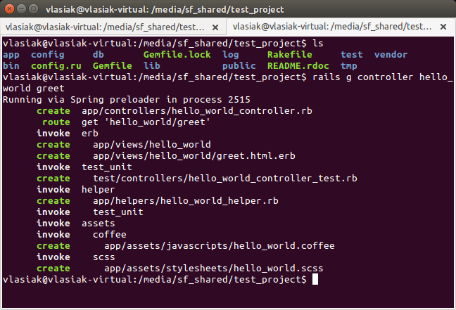

Rails
Controllers
Quick lecture overview
- What do Controllers do?
- Routing
- REST
- Callbacks
- Session/Cookies
- Flash messages
- Multiple formats handling
What do Controllers do?
Controller is the C in MVC. The controller receives the request, fetch or save data from a model and use a view to create HTML output.
When your application receives a request, the routing will determine which controller and action to run, then Rails creates an instance of that controller and runs the method with the same name as the action.
class ClientsController < ApplicationController
def new
end
end
As an example, if a user goes to /clients/new in your application to add a new client, Rails will create an instance of ClientsController and run the new method.
Using Generator
Passing the parameters
class ClientsController < ApplicationController
# The URL for this action would look like this in order to list activated
# clients: /clients?status=activated
def index
if params[:status] == "activated"
@clients = Client.activated
else
@clients = Client.inactivated
end
end
end
Sanitizing (Strong parameters)
class PeopleController < ActionController::Base
def create
Person.create(person_params)
end
private
def person_params
params.require(:person).permit(:name, :age)
end
end
Routing
The Rails router recognizes URLs and dispatches them to a controller's action. It can also generate paths and URLs, avoiding the need to hardcode strings in your views.
Rails RoutingREST (REpresentational State Transfer)
REST is an architecture style for designing networked applications. Every resource has its unique URI. RESTful applications use HTTP requests to post data (create and/or update), read data (e.g., make queries), and delete data. Thus, REST uses HTTP for all four CRUD (Create/Read/Update/Delete) operations. So we can manipulate that object using its URI and HTTP actions.
Practical using in RailsCallbacks/Filters
Filters are methods that are run before, after or "around" a controller action.
- Before
- After
- Around
class ApplicationController < ActionController::Base
before_action :require_login
private
def require_login
redirect_to new_login_url unless logged_in?
end
end
Session/Cookies
HTTP is as STATELESS protocol. Stateless protocol is a communications protocol that treats each request as an independent transaction that is unrelated to any previous request so that the communication consists of independent pairs of request and response.
Your application has a session for each user in which you can store small amounts of data that will be persisted between requests. The session is only available in the controller and the view.
Accessing the Session ExamplesYour application can store small amounts of data ON THE CLIENT - called cookies - that will be persisted across requests.
Accessing the Cookies ExamplesFlash messages
The flash is a special part of the session which is cleared with each request. This means that values stored there will only be available in the next request, which is useful for passing error messages etc.
class LoginsController < ApplicationController
def destroy
session[:current_user_id] = nil
flash[:notice] = "You have successfully logged out."
redirect_to root_url
#redirect_to root_url, notice: "You have successfully logged out."
end
end
Multiple formats handling
class UsersController < ApplicationController
def index
@users = User.all
respond_to do |format|
format.html # index.html.erb
format.xml { render xml: @users}
format.json { render json: @users}
end
end
end

No questions? No answers!
Created by Vasyl Lasiak / @vlasiak